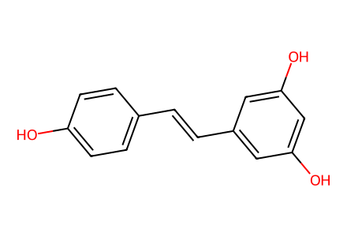
Oc1ccc(/C=C/c2cc(O)cc(O)c2)cc1Preparative forward network in article Figures 2-4 and SI sections 2.1-2.8, including five targets, isolated side products, alternative procedures, S1/S2 label collisions, and literature-supplied starting materials. Full coverage refers to the reported preparation boundary, not synthesis of literature precursors from commercial materials. Proposed radicals, transition states and undemonstrated mechanistic intermediates are not isolated reaction nodes. Relative-only stereochemical representatives and unencoded perspective stereochemistry remain candidate data requiring independent review. Facts compiled deterministically; independent review pending.
完整 JSON · 逐步 CSV · 路线序列 · SDF · HRMS 核对
| 事件 | 分子连接 | 报告产率 | Canonical reaction SMILES |
|---|---|---|---|
| E01 | 1 → 10 | 10: 51% | Oc1ccc(/C=C/c2cc(O)cc(O)c2)cc1>>CC(C)[Si](Oc1ccc(/C=C/c2cc(O)cc(O)c2)cc1)(C(C)C)C(C)C |
| E02 | 10 → 11 | 11: 97% | CC(C)[Si](Oc1ccc(/C=C/c2cc(O)cc(O)c2)cc1)(C(C)C)C(C)C>>CS(=O)(=O)Oc1cc(/C=C/c2ccc(O)cc2)cc(OS(C)(=O)=O)c1 |
| E03 | 1 → 12 | 12: 99% | Oc1ccc(/C=C/c2cc(O)cc(O)c2)cc1>>CC(C)[Si](Oc1ccc(/C=C/c2cc(O[Si](C(C)C)(C(C)C)C(C)C)cc(O[Si](C(C)C)(C(C)C)C(C)C)c2)cc1)(C(C)C)C(C)C |
| E04 | 1 → SI-S1-TBS | SI-S1-TBS: 99% | Oc1ccc(/C=C/c2cc(O)cc(O)c2)cc1>>CC(C)(C)[Si](C)(C)Oc1ccc(/C=C/c2cc(O[Si](C)(C)C(C)(C)C)cc(O[Si](C)(C)C(C)(C)C)c2)cc1 |
| E05 | 12 → 13 | 13: 51% | CC(C)[Si](Oc1ccc(/C=C/c2cc(O[Si](C(C)C)(C(C)C)C(C)C)cc(O[Si](C(C)C)(C(C)C)C(C)C)c2)cc1)(C(C)C)C(C)C>>CC(C)[Si](Oc1cc(/C=C/c2ccc(O)cc2)cc(O[Si](C(C)C)(C(C)C)C(C)C)c1)(C(C)C)C(C)C |
| E06 | 13 → SI-S2-Ms | SI-S2-Ms: 80% | CC(C)[Si](Oc1cc(/C=C/c2ccc(O)cc2)cc(O[Si](C(C)C)(C(C)C)C(C)C)c1)(C(C)C)C(C)C>>CC(C)[Si](Oc1cc(/C=C/c2ccc(OS(C)(=O)=O)cc2)cc(O[Si](C(C)C)(C(C)C)C(C)C)c1)(C(C)C)C(C)C |
| E07 | SI-S2-Ms → 14 | 14: 94% | CC(C)[Si](Oc1cc(/C=C/c2ccc(OS(C)(=O)=O)cc2)cc(O[Si](C(C)C)(C(C)C)C(C)C)c1)(C(C)C)C(C)C>>CS(=O)(=O)Oc1ccc(/C=C/c2cc(O)cc(O)c2)cc1 |
| E08 | 1 → 14 | 14: 19% | Oc1ccc(/C=C/c2cc(O)cc(O)c2)cc1>>CS(=O)(=O)Oc1ccc(/C=C/c2cc(O)cc(O)c2)cc1 |
| E09 | 10 + 15 → 16 + 17 | 16: 55%; 17: 14% | CC(C)[Si](C1=CC(=CC(c2cc(OCc3ccccc3)cc(OCc3ccccc3)c2)C(C=C2C=C([Si](C(C)C)(C(C)C)C(C)C)C(=O)C([Si](C(C)C)(C(C)C)C(C)C)=C2)c2cc(OCc3ccccc3)cc(OCc3ccccc3)c2)C=C([Si](C(C)C)(C(C)C)C(C)C)C1=O)(C(C)C)C(C)C.CC(C)[Si](Oc1ccc(/C=C/c2cc(O)cc(O)c2)cc1)(C(C)C)C(C)C>>CC(C)[Si](Oc1ccc(/C=C/c2cc(O)c3c(c2)O[C@H](c2cc([Si](C(C)C)(C(C)C)C(C)C)c(O)c([Si](C(C)C)(C(C)C)C(C)C)c2)[C@H]3c2cc(OCc3ccccc3)cc(OCc3ccccc3)c2)cc1)(C(C)C)C(C)C.CC(C)[Si](Oc1ccc(/C=C/c2cc(O)cc3c2[C@H](c2cc(OCc4ccccc4)cc(OCc4ccccc4)c2)[C@@H](c2cc([Si](C(C)C)(C(C)C)C(C)C)c(O)c([Si](C(C)C)(C(C)C)C(C)C)c2)O3)cc1)(C(C)C)C(C)C |
| E10 | LIT-S1 → S3 | S3: 65% | CC(C)[Si](c1cc(/C=C/c2cc(OCc3ccccc3)cc(OCc3ccccc3)c2)cc([Si](C(C)C)(C(C)C)C(C)C)c1O)(C(C)C)C(C)C>>CC(C)[Si](c1cc(/C=C/c2cc(O)cc(O)c2)cc([Si](C(C)C)(C(C)C)C(C)C)c1O)(C(C)C)C(C)C |
| E11 | S3 → S4 | S4: 79% | CC(C)[Si](c1cc(/C=C/c2cc(O)cc(O)c2)cc([Si](C(C)C)(C(C)C)C(C)C)c1O)(C(C)C)C(C)C>>CC(C)[Si](Oc1cc(/C=C/c2cc([Si](C(C)C)(C(C)C)C(C)C)c(O)c([Si](C(C)C)(C(C)C)C(C)C)c2)cc(O[Si](C(C)C)(C(C)C)C(C)C)c1)(C(C)C)C(C)C |
| E12 | S4 → 18 | 89% combined mixture yield | CC(C)[Si](Oc1cc(/C=C/c2cc([Si](C(C)C)(C(C)C)C(C)C)c(O)c([Si](C(C)C)(C(C)C)C(C)C)c2)cc(O[Si](C(C)C)(C(C)C)C(C)C)c1)(C(C)C)C(C)C>>CC(C)[Si](Oc1cc(O[Si](C(C)C)(C(C)C)C(C)C)cc(C(C=C2C=C([Si](C(C)C)(C(C)C)C(C)C)C(=O)C([Si](C(C)C)(C(C)C)C(C)C)=C2)C(C=C2C=C([Si](C(C)C)(C(C)C)C(C)C)C(=O)C([Si](C(C)C)(C(C)C)C(C)C)=C2)c2cc(O[Si](C(C)C)(C(C)C)C(C)C)cc(O[Si](C(C)C)(C(C)C)C(C)C)c2)c1)(C(C)C)C(C)C |
| E13 | 13 + 18 → 19 + S4 | 19: 89% | CC(C)[Si](Oc1cc(/C=C/c2ccc(O)cc2)cc(O[Si](C(C)C)(C(C)C)C(C)C)c1)(C(C)C)C(C)C.CC(C)[Si](Oc1cc(O[Si](C(C)C)(C(C)C)C(C)C)cc(C(C=C2C=C([Si](C(C)C)(C(C)C)C(C)C)C(=O)C([Si](C(C)C)(C(C)C)C(C)C)=C2)C(C=C2C=C([Si](C(C)C)(C(C)C)C(C)C)C(=O)C([Si](C(C)C)(C(C)C)C(C)C)=C2)c2cc(O[Si](C(C)C)(C(C)C)C(C)C)cc(O[Si](C(C)C)(C(C)C)C(C)C)c2)c1)(C(C)C)C(C)C>>CC(C)[Si](Oc1cc(/C=C/c2cc([Si](C(C)C)(C(C)C)C(C)C)c(O)c([Si](C(C)C)(C(C)C)C(C)C)c2)cc(O[Si](C(C)C)(C(C)C)C(C)C)c1)(C(C)C)C(C)C.CC(C)[Si](Oc1cc(/C=C/c2ccc3c(c2)[C@H](c2cc(O[Si](C(C)C)(C(C)C)C(C)C)cc(O[Si](C(C)C)(C(C)C)C(C)C)c2)[C@@H](c2cc([Si](C(C)C)(C(C)C)C(C)C)c(O)c([Si](C(C)C)(C(C)C)C(C)C)c2)O3)cc(O[Si](C(C)C)(C(C)C)C(C)C)c1)(C(C)C)C(C)C |
| E14 | 19 → 2 | 2: 58% | CC(C)[Si](Oc1cc(/C=C/c2ccc3c(c2)[C@H](c2cc(O[Si](C(C)C)(C(C)C)C(C)C)cc(O[Si](C(C)C)(C(C)C)C(C)C)c2)[C@@H](c2cc([Si](C(C)C)(C(C)C)C(C)C)c(O)c([Si](C(C)C)(C(C)C)C(C)C)c2)O3)cc(O[Si](C(C)C)(C(C)C)C(C)C)c1)(C(C)C)C(C)C>>Oc1ccc([C@H]2Oc3ccc(/C=C/c4cc(O)cc(O)c4)cc3[C@@H]2c2cc(O)cc(O)c2)cc1 |
| E15 | 11 + 18 → S5 | S5: 76% | CC(C)[Si](Oc1cc(O[Si](C(C)C)(C(C)C)C(C)C)cc(C(C=C2C=C([Si](C(C)C)(C(C)C)C(C)C)C(=O)C([Si](C(C)C)(C(C)C)C(C)C)=C2)C(C=C2C=C([Si](C(C)C)(C(C)C)C(C)C)C(=O)C([Si](C(C)C)(C(C)C)C(C)C)=C2)c2cc(O[Si](C(C)C)(C(C)C)C(C)C)cc(O[Si](C(C)C)(C(C)C)C(C)C)c2)c1)(C(C)C)C(C)C.CS(=O)(=O)Oc1cc(/C=C/c2ccc(O)cc2)cc(OS(C)(=O)=O)c1>>CC(C)[Si](Oc1cc(O[Si](C(C)C)(C(C)C)C(C)C)cc([C@H]2c3cc(/C=C/c4cc(OS(C)(=O)=O)cc(OS(C)(=O)=O)c4)ccc3O[C@@H]2c2cc([Si](C(C)C)(C(C)C)C(C)C)c(O)c([Si](C(C)C)(C(C)C)C(C)C)c2)c1)(C(C)C)C(C)C |
| E16 | 10 + 18 → 20 + 21 | 20: 12%; 21: 64% | CC(C)[Si](Oc1cc(O[Si](C(C)C)(C(C)C)C(C)C)cc(C(C=C2C=C([Si](C(C)C)(C(C)C)C(C)C)C(=O)C([Si](C(C)C)(C(C)C)C(C)C)=C2)C(C=C2C=C([Si](C(C)C)(C(C)C)C(C)C)C(=O)C([Si](C(C)C)(C(C)C)C(C)C)=C2)c2cc(O[Si](C(C)C)(C(C)C)C(C)C)cc(O[Si](C(C)C)(C(C)C)C(C)C)c2)c1)(C(C)C)C(C)C.CC(C)[Si](Oc1ccc(/C=C/c2cc(O)cc(O)c2)cc1)(C(C)C)C(C)C>>CC(C)[Si](Oc1ccc(/C=C/c2cc(O)c3c(c2)O[C@H](c2cc([Si](C(C)C)(C(C)C)C(C)C)c(O)c([Si](C(C)C)(C(C)C)C(C)C)c2)[C@H]3c2cc(O[Si](C(C)C)(C(C)C)C(C)C)cc(O[Si](C(C)C)(C(C)C)C(C)C)c2)cc1)(C(C)C)C(C)C.CC(C)[Si](Oc1ccc(/C=C/c2cc(O)cc3c2[C@H](c2cc(O[Si](C(C)C)(C(C)C)C(C)C)cc(O[Si](C(C)C)(C(C)C)C(C)C)c2)[C@@H](c2cc([Si](C(C)C)(C(C)C)C(C)C)c(O)c([Si](C(C)C)(C(C)C)C(C)C)c2)O3)cc1)(C(C)C)C(C)C |
| E17 | 21 → 8 | 8: 75% | CC(C)[Si](Oc1ccc(/C=C/c2cc(O)cc3c2[C@H](c2cc(O[Si](C(C)C)(C(C)C)C(C)C)cc(O[Si](C(C)C)(C(C)C)C(C)C)c2)[C@@H](c2cc([Si](C(C)C)(C(C)C)C(C)C)c(O)c([Si](C(C)C)(C(C)C)C(C)C)c2)O3)cc1)(C(C)C)C(C)C>>Oc1ccc([C@@H]2Cc3cc(O)cc4c3[C@H](c3cc(O)cc(O)c32)[C@@H](c2ccc(O)cc2)O4)cc1 |
| E18 | 20 → 4 | 4: 71% | CC(C)[Si](Oc1ccc(/C=C/c2cc(O)c3c(c2)O[C@H](c2cc([Si](C(C)C)(C(C)C)C(C)C)c(O)c([Si](C(C)C)(C(C)C)C(C)C)c2)[C@H]3c2cc(O[Si](C(C)C)(C(C)C)C(C)C)cc(O[Si](C(C)C)(C(C)C)C(C)C)c2)cc1)(C(C)C)C(C)C>>Oc1ccc(/C=C/c2cc(O)c3c(c2)O[C@H](c2ccc(O)cc2)[C@H]3c2cc(O)cc(O)c2)cc1 |
| E19 | 14 + 18 → 30 + 31 | 30: 11%; 31: 57% | CC(C)[Si](Oc1cc(O[Si](C(C)C)(C(C)C)C(C)C)cc(C(C=C2C=C([Si](C(C)C)(C(C)C)C(C)C)C(=O)C([Si](C(C)C)(C(C)C)C(C)C)=C2)C(C=C2C=C([Si](C(C)C)(C(C)C)C(C)C)C(=O)C([Si](C(C)C)(C(C)C)C(C)C)=C2)c2cc(O[Si](C(C)C)(C(C)C)C(C)C)cc(O[Si](C(C)C)(C(C)C)C(C)C)c2)c1)(C(C)C)C(C)C.CS(=O)(=O)Oc1ccc(/C=C/c2cc(O)cc(O)c2)cc1>>CC(C)[Si](Oc1cc(O[Si](C(C)C)(C(C)C)C(C)C)cc([C@H]2c3c(/C=C/c4ccc(OS(C)(=O)=O)cc4)cc(O)cc3O[C@@H]2c2cc([Si](C(C)C)(C(C)C)C(C)C)c(O)c([Si](C(C)C)(C(C)C)C(C)C)c2)c1)(C(C)C)C(C)C.CC(C)[Si](Oc1cc(O[Si](C(C)C)(C(C)C)C(C)C)cc([C@H]2c3c(O)cc(/C=C/c4ccc(OS(C)(=O)=O)cc4)cc3O[C@@H]2c2cc([Si](C(C)C)(C(C)C)C(C)C)c(O)c([Si](C(C)C)(C(C)C)C(C)C)c2)c1)(C(C)C)C(C)C |
| E20 | 14 + 18 → 31 | 31: 48% | CC(C)[Si](Oc1cc(O[Si](C(C)C)(C(C)C)C(C)C)cc(C(C=C2C=C([Si](C(C)C)(C(C)C)C(C)C)C(=O)C([Si](C(C)C)(C(C)C)C(C)C)=C2)C(C=C2C=C([Si](C(C)C)(C(C)C)C(C)C)C(=O)C([Si](C(C)C)(C(C)C)C(C)C)=C2)c2cc(O[Si](C(C)C)(C(C)C)C(C)C)cc(O[Si](C(C)C)(C(C)C)C(C)C)c2)c1)(C(C)C)C(C)C.CS(=O)(=O)Oc1ccc(/C=C/c2cc(O)cc(O)c2)cc1>>CC(C)[Si](Oc1cc(O[Si](C(C)C)(C(C)C)C(C)C)cc([C@H]2c3c(/C=C/c4ccc(OS(C)(=O)=O)cc4)cc(O)cc3O[C@@H]2c2cc([Si](C(C)C)(C(C)C)C(C)C)c(O)c([Si](C(C)C)(C(C)C)C(C)C)c2)c1)(C(C)C)C(C)C |
| E21 | 31 → 32 | 32: 66% | CC(C)[Si](Oc1cc(O[Si](C(C)C)(C(C)C)C(C)C)cc([C@H]2c3c(/C=C/c4ccc(OS(C)(=O)=O)cc4)cc(O)cc3O[C@@H]2c2cc([Si](C(C)C)(C(C)C)C(C)C)c(O)c([Si](C(C)C)(C(C)C)C(C)C)c2)c1)(C(C)C)C(C)C>>CS(=O)(=O)Oc1ccc(/C=C/c2cc(O)cc3c2[C@H](c2cc(O)cc(O)c2)[C@@H](c2ccc(O)cc2)O3)cc1 |
| E22 | 32 → 3 | 3: 75% | CS(=O)(=O)Oc1ccc(/C=C/c2cc(O)cc3c2[C@H](c2cc(O)cc(O)c2)[C@@H](c2ccc(O)cc2)O3)cc1>>Oc1ccc(/C=C/c2cc(O)cc3c2[C@H](c2cc(O)cc(O)c2)[C@@H](c2ccc(O)cc2)O3)cc1 |
| E23 | 16 → 35 | not reported | CC(C)[Si](Oc1ccc(/C=C/c2cc(O)cc3c2[C@H](c2cc(OCc4ccccc4)cc(OCc4ccccc4)c2)[C@@H](c2cc([Si](C(C)C)(C(C)C)C(C)C)c(O)c([Si](C(C)C)(C(C)C)C(C)C)c2)O3)cc1)(C(C)C)C(C)C>>CC(C)[Si](Oc1ccc(C2c3c(O)cc(O)cc3C3c4c(O)cc(O)cc4C2C3c2cc([Si](C(C)C)(C(C)C)C(C)C)c(O)c([Si](C(C)C)(C(C)C)C(C)C)c2)cc1)(C(C)C)C(C)C |
| E24 | 21 → 36 | 36: 73% | CC(C)[Si](Oc1ccc(/C=C/c2cc(O)cc3c2[C@H](c2cc(O[Si](C(C)C)(C(C)C)C(C)C)cc(O[Si](C(C)C)(C(C)C)C(C)C)c2)[C@@H](c2cc([Si](C(C)C)(C(C)C)C(C)C)c(O)c([Si](C(C)C)(C(C)C)C(C)C)c2)O3)cc1)(C(C)C)C(C)C>>CC(C)[Si](Oc1ccc(C2c3c(O[Si](C(C)C)(C(C)C)C(C)C)cc(O[Si](C(C)C)(C(C)C)C(C)C)cc3C3c4c(O)cc(O)cc4C2C3c2cc([Si](C(C)C)(C(C)C)C(C)C)c(O)c([Si](C(C)C)(C(C)C)C(C)C)c2)cc1)(C(C)C)C(C)C |
| E25 | 36 → 9 | 9: 77% | CC(C)[Si](Oc1ccc(C2c3c(O[Si](C(C)C)(C(C)C)C(C)C)cc(O[Si](C(C)C)(C(C)C)C(C)C)cc3C3c4c(O)cc(O)cc4C2C3c2cc([Si](C(C)C)(C(C)C)C(C)C)c(O)c([Si](C(C)C)(C(C)C)C(C)C)c2)cc1)(C(C)C)C(C)C>>Oc1ccc(C2c3c(O)cc(O)cc3C3c4c(O)cc(O)cc4C2C3c2ccc(O)cc2)cc1 |

Oc1ccc(/C=C/c2cc(O)cc(O)c2)cc1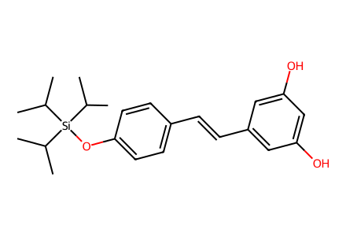
CC(C)[Si](Oc1ccc(/C=C/c2cc(O)cc(O)c2)cc1)(C(C)C)C(C)C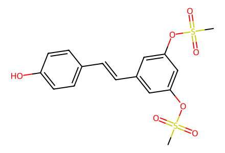
CS(=O)(=O)Oc1cc(/C=C/c2ccc(O)cc2)cc(OS(C)(=O)=O)c1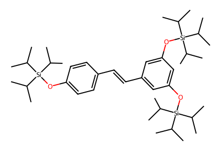
CC(C)[Si](Oc1ccc(/C=C/c2cc(O[Si](C(C)C)(C(C)C)C(C)C)cc(O[Si](C(C)C)(C(C)C)C(C)C)c2)cc1)(C(C)C)C(C)C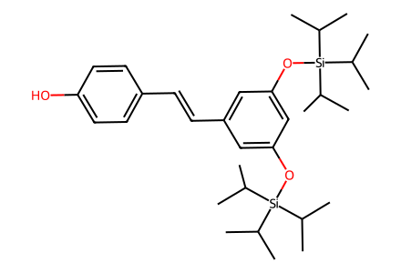
CC(C)[Si](Oc1cc(/C=C/c2ccc(O)cc2)cc(O[Si](C(C)C)(C(C)C)C(C)C)c1)(C(C)C)C(C)C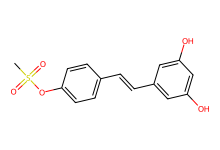
CS(=O)(=O)Oc1ccc(/C=C/c2cc(O)cc(O)c2)cc1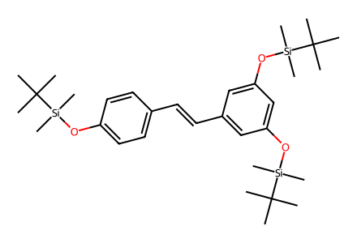
CC(C)(C)[Si](C)(C)Oc1ccc(/C=C/c2cc(O[Si](C)(C)C(C)(C)C)cc(O[Si](C)(C)C(C)(C)C)c2)cc1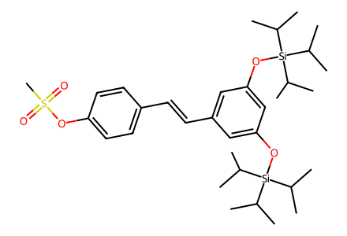
CC(C)[Si](Oc1cc(/C=C/c2ccc(OS(C)(=O)=O)cc2)cc(O[Si](C(C)C)(C(C)C)C(C)C)c1)(C(C)C)C(C)C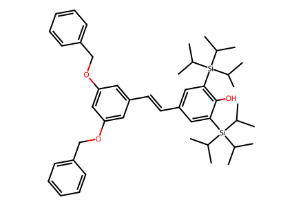
CC(C)[Si](c1cc(/C=C/c2cc(OCc3ccccc3)cc(OCc3ccccc3)c2)cc([Si](C(C)C)(C(C)C)C(C)C)c1O)(C(C)C)C(C)C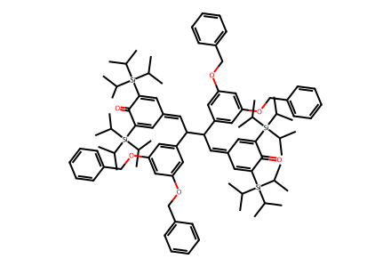
CC(C)[Si](C1=CC(=CC(c2cc(OCc3ccccc3)cc(OCc3ccccc3)c2)C(C=C2C=C([Si](C(C)C)(C(C)C)C(C)C)C(=O)C([Si](C(C)C)(C(C)C)C(C)C)=C2)c2cc(OCc3ccccc3)cc(OCc3ccccc3)c2)C=C([Si](C(C)C)(C(C)C)C(C)C)C1=O)(C(C)C)C(C)C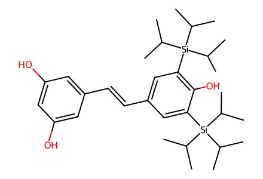
CC(C)[Si](c1cc(/C=C/c2cc(O)cc(O)c2)cc([Si](C(C)C)(C(C)C)C(C)C)c1O)(C(C)C)C(C)C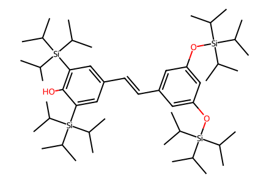
CC(C)[Si](Oc1cc(/C=C/c2cc([Si](C(C)C)(C(C)C)C(C)C)c(O)c([Si](C(C)C)(C(C)C)C(C)C)c2)cc(O[Si](C(C)C)(C(C)C)C(C)C)c1)(C(C)C)C(C)C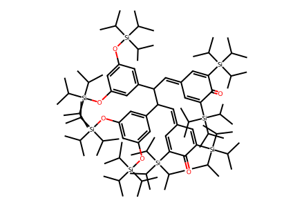
CC(C)[Si](Oc1cc(O[Si](C(C)C)(C(C)C)C(C)C)cc(C(C=C2C=C([Si](C(C)C)(C(C)C)C(C)C)C(=O)C([Si](C(C)C)(C(C)C)C(C)C)=C2)C(C=C2C=C([Si](C(C)C)(C(C)C)C(C)C)C(=O)C([Si](C(C)C)(C(C)C)C(C)C)=C2)c2cc(O[Si](C(C)C)(C(C)C)C(C)C)cc(O[Si](C(C)C)(C(C)C)C(C)C)c2)c1)(C(C)C)C(C)C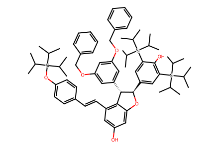
CC(C)[Si](Oc1ccc(/C=C/c2cc(O)cc3c2[C@H](c2cc(OCc4ccccc4)cc(OCc4ccccc4)c2)[C@@H](c2cc([Si](C(C)C)(C(C)C)C(C)C)c(O)c([Si](C(C)C)(C(C)C)C(C)C)c2)O3)cc1)(C(C)C)C(C)C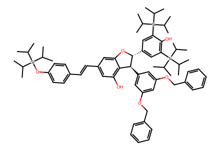
CC(C)[Si](Oc1ccc(/C=C/c2cc(O)c3c(c2)O[C@H](c2cc([Si](C(C)C)(C(C)C)C(C)C)c(O)c([Si](C(C)C)(C(C)C)C(C)C)c2)[C@H]3c2cc(OCc3ccccc3)cc(OCc3ccccc3)c2)cc1)(C(C)C)C(C)C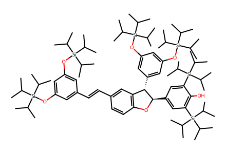
CC(C)[Si](Oc1cc(/C=C/c2ccc3c(c2)[C@H](c2cc(O[Si](C(C)C)(C(C)C)C(C)C)cc(O[Si](C(C)C)(C(C)C)C(C)C)c2)[C@@H](c2cc([Si](C(C)C)(C(C)C)C(C)C)c(O)c([Si](C(C)C)(C(C)C)C(C)C)c2)O3)cc(O[Si](C(C)C)(C(C)C)C(C)C)c1)(C(C)C)C(C)C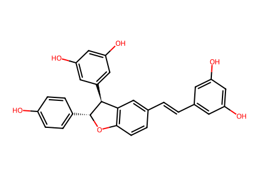
Oc1ccc([C@H]2Oc3ccc(/C=C/c4cc(O)cc(O)c4)cc3[C@@H]2c2cc(O)cc(O)c2)cc1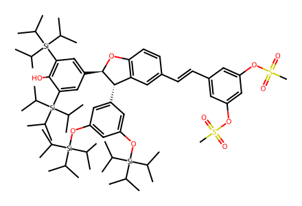
CC(C)[Si](Oc1cc(O[Si](C(C)C)(C(C)C)C(C)C)cc([C@H]2c3cc(/C=C/c4cc(OS(C)(=O)=O)cc(OS(C)(=O)=O)c4)ccc3O[C@@H]2c2cc([Si](C(C)C)(C(C)C)C(C)C)c(O)c([Si](C(C)C)(C(C)C)C(C)C)c2)c1)(C(C)C)C(C)C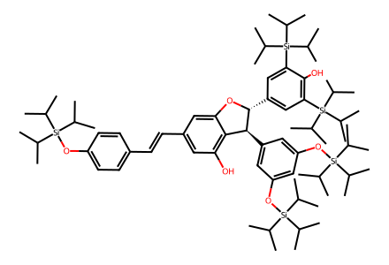
CC(C)[Si](Oc1ccc(/C=C/c2cc(O)c3c(c2)O[C@H](c2cc([Si](C(C)C)(C(C)C)C(C)C)c(O)c([Si](C(C)C)(C(C)C)C(C)C)c2)[C@H]3c2cc(O[Si](C(C)C)(C(C)C)C(C)C)cc(O[Si](C(C)C)(C(C)C)C(C)C)c2)cc1)(C(C)C)C(C)C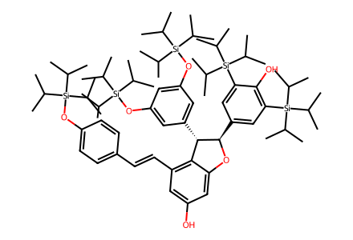
CC(C)[Si](Oc1ccc(/C=C/c2cc(O)cc3c2[C@H](c2cc(O[Si](C(C)C)(C(C)C)C(C)C)cc(O[Si](C(C)C)(C(C)C)C(C)C)c2)[C@@H](c2cc([Si](C(C)C)(C(C)C)C(C)C)c(O)c([Si](C(C)C)(C(C)C)C(C)C)c2)O3)cc1)(C(C)C)C(C)C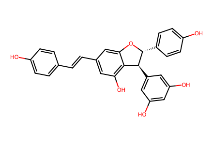
Oc1ccc(/C=C/c2cc(O)c3c(c2)O[C@H](c2ccc(O)cc2)[C@H]3c2cc(O)cc(O)c2)cc1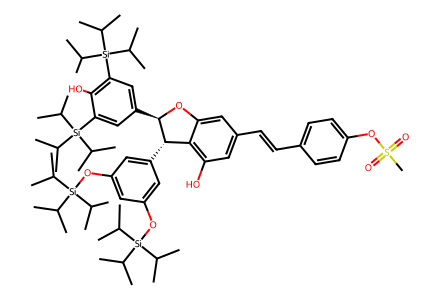
CC(C)[Si](Oc1cc(O[Si](C(C)C)(C(C)C)C(C)C)cc([C@H]2c3c(O)cc(/C=C/c4ccc(OS(C)(=O)=O)cc4)cc3O[C@@H]2c2cc([Si](C(C)C)(C(C)C)C(C)C)c(O)c([Si](C(C)C)(C(C)C)C(C)C)c2)c1)(C(C)C)C(C)C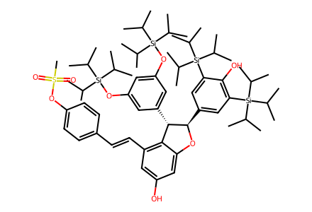
CC(C)[Si](Oc1cc(O[Si](C(C)C)(C(C)C)C(C)C)cc([C@H]2c3c(/C=C/c4ccc(OS(C)(=O)=O)cc4)cc(O)cc3O[C@@H]2c2cc([Si](C(C)C)(C(C)C)C(C)C)c(O)c([Si](C(C)C)(C(C)C)C(C)C)c2)c1)(C(C)C)C(C)C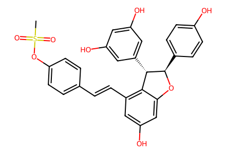
CS(=O)(=O)Oc1ccc(/C=C/c2cc(O)cc3c2[C@H](c2cc(O)cc(O)c2)[C@@H](c2ccc(O)cc2)O3)cc1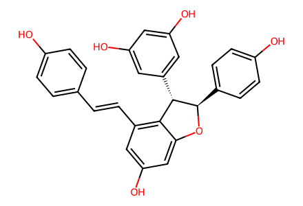
Oc1ccc(/C=C/c2cc(O)cc3c2[C@H](c2cc(O)cc(O)c2)[C@@H](c2ccc(O)cc2)O3)cc1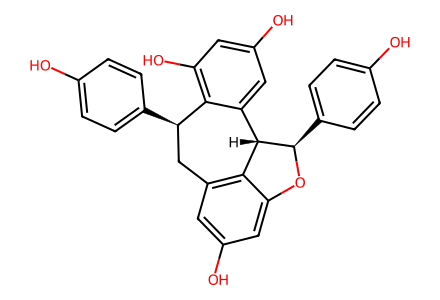
Oc1ccc([C@@H]2Cc3cc(O)cc4c3[C@H](c3cc(O)cc(O)c32)[C@@H](c2ccc(O)cc2)O4)cc1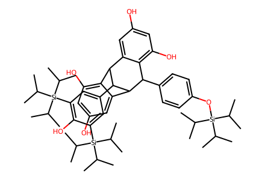
CC(C)[Si](Oc1ccc(C2c3c(O)cc(O)cc3C3c4c(O)cc(O)cc4C2C3c2cc([Si](C(C)C)(C(C)C)C(C)C)c(O)c([Si](C(C)C)(C(C)C)C(C)C)c2)cc1)(C(C)C)C(C)C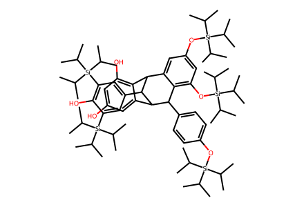
CC(C)[Si](Oc1ccc(C2c3c(O[Si](C(C)C)(C(C)C)C(C)C)cc(O[Si](C(C)C)(C(C)C)C(C)C)cc3C3c4c(O)cc(O)cc4C2C3c2cc([Si](C(C)C)(C(C)C)C(C)C)c(O)c([Si](C(C)C)(C(C)C)C(C)C)c2)cc1)(C(C)C)C(C)C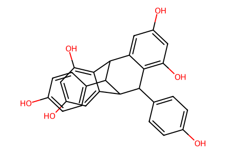
Oc1ccc(C2c3c(O)cc(O)cc3C3c4c(O)cc(O)cc4C2C3c2ccc(O)cc2)cc1